What Every Product Page Shows — Shop-Wide or One by One
User Manual | 369ai
What this does
369 Mart Product Page decides what a customer sees when they open a product in the shop app or on the website: the price box, the small promise badges under the price, the specifications, the description, ratings and reviews, and the rows of other products at the bottom. You switch each part on or off for the whole shop once, and then let one product differ only where it really needs to.
It also gives staff the Products desk: a picture-led list of every product, a read-out of exactly what each product's page will show and where each line comes from, and an editor for the product's own details, photographs and choices (size, colour, RAM…).
1. Whole shopSwitch each part of the page on or off for every product
→
2. By categoryGive a whole category its own wording, once
→
3. One productAlways show, always hide, or own wording — only where needed
→
4. The pageThe shop shows the result to customers
Before you start: The shop-wide choices are made once by a Manager or the Owner. You need some published products (products switched on for the shop) — the editor draws a real product, and shows a message instead if there is none yet. Everyday staff only need the Products desk.
Words you'll see
Word
What it means
Product page
The screen a customer sees after tapping a product in the shop.
Section
One band of that page, such as Ratings and reviews. Its switch turns the whole band off.
Field
One thing inside a section, such as Average rating. Each has its own switch.
Whole shop
The default every product follows.
One product
A single product's own choice, which can differ from the whole shop.
Follow the default
The product does whatever the whole-shop switch says — now and after any later change.
Trust badge
A small promise under the price: returns, warranty, cash on delivery, secure payment.
How the manual is arranged
Part 1 – Setting Up is done once, from 369 Mart → Store → Product Page: what every product page shows and what it says. Part 2 – Everyday Use covers making one product differ, and the Products desk where staff read and edit products. Part 3 – Keeping It Secure & In Order covers who may change what, how to find and undo exceptions, and reviews.
Part 1 — Setting Up
Done by a Manager or the Owner. Once the whole-shop page looks right, most products never need touching again.
1Where everything lives
Open 369 Mart from the main menu. This module adds:
Store → Product Page — the editor: the real product page, wide, with a switch on every part. This is the main screen.
Store → Product pages — the Products desk: browse products, read what each page shows, and edit a product's own details.
Advanced → Product Page (all settings) — the same page drawn in a phone frame, with every field of a section listed at once.
Page building → Product Page Fields — the full list of fields, grouped by section.
Page building → Product Page Sections — the list of sections.
Page building → Wording by Category — words set once for a whole category.
It also adds a 369 Mart part to each product's own form (see Part 2, step 8) and a Usual product details box to each product category (step 6 below).
2Decide what every product shows
Open Store → Product Page. It opens on Editing: Whole shop. The left side is the page as shoppers see it, drawn from a real published product; the right side is the panel The whole page, listing each section with a count such as 2 of 2 shown.
Click a section on the page (or in the list) to open it. The Shown / Hidden switch at the top turns the whole section off for every product.
The eye on the top-right of each band does the same thing straight from the page — it takes the section out of the app without deleting anything.
Click a field to open it. Shown on every product is that field's whole-shop switch. In the section list, the eye beside a field does the same.
Show what is switched off (N) — tick it to see the parts you have hidden, greyed out, so you can switch them back on.
Every change saves at once; the chip on the toolbar reads Saving…, then Saved. There is no Save button.
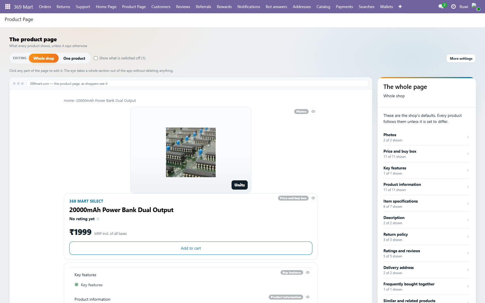
Figure 1 — The editor on Whole shop: the product page on the left with a tag and an eye on each band, and The whole page panel on the right listing each section with how many of its fields are shown. More settings is top right.
Good to know: The pictures in this manual were taken on an earlier version and show a few sections your screen no longer has (such as Key features or Return policy). Today the page has seven sections — see Sections and fields near the end.
Important: A section switch beats everything. With a section off, none of its fields show on any product — even fields set to Always show on one product.
3Set the shop's wording
Some fields print words you type rather than something worked out from the product. Open the field on Whole shop and fill in Default wording. The fields that work this way, with their starting words:
Badge: returns — 7-day replacement.
Badge: warranty — Warranty as listed. A product whose Product details has a Warranty line (for example Warranty: 1 year) shows that instead.
Badge: cash on delivery — Cash on delivery.
Badge: secure payment — Secure payment.
Be-the-first-to-review line — Be the first to review this product, shown when a product has no reviews yet.
Other fields say where their value comes from instead: Comes from the product's own … field (taken from the product, such as its price) or Worked out by the app (such as the average rating).
Tip: Empty wording hides that badge. To drop the cash-on-delivery badge for the whole shop, either clear its words or switch the field off.
4Wording for a whole category
When a group of products needs different words — longer warranty on laptops, no cash on delivery for one category — open Page building → Wording by Category and add a line:
Category — the shop category (the aisle customers browse).
Field — which field the words are for. Section fills itself in.
Value for this category — the words every product in that category uses, unless the product has its own.
Each field can have one line per category. If a product sits in several categories, the most specific one wins — a sub-category beats its parent.
Watch out: A line left with an empty value still counts. It blanks that field for the whole category (an empty badge is hidden). To go back to the shop's words, delete the line instead of clearing it.
The value a customer finally sees is picked in this order: the product's own words, then its category's, then the shop default.
5More settings: every field at once
Press More settings on the editor (or open Advanced → Product Page (all settings)). The same page appears in a phone frame. Click a band on the phone to list every field in it with its switch; the same Whole shop / One product choice sits in the top bar, and The page takes you back. Greyed parts are hidden from customers.
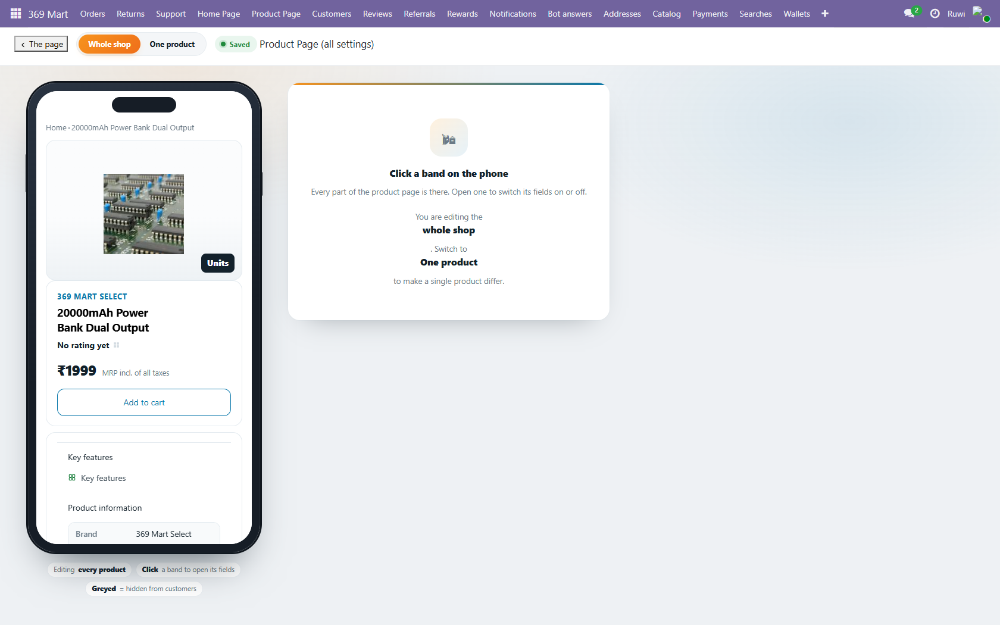
Figure 2 — Product Page (all settings): the page in a phone frame on the left, and Click a band on the phone on the right. The top bar shows The page, Whole shop / One product and the Saved chip.
For plain lists, use Page building:
Product Page Sections — each section with What it is, Fields shown and a Show in the app switch. Open one to see and switch its fields.
Product Page Fields — every field, grouped by section, with Value comes from, Default, Products differing and Show in the app. Filters: Shown, Hidden and Some products differ. A field's form also has Can differ per product (off means a product can be hidden but never given its own words) and a Different for some categories table.
Watch out: Leave each field's and section's Key alone. The shop finds the field by it; changing it breaks that part of the page.
6The usual product details for a category
Open a product category from Inventory → Configuration → Product Categories. In its 369 Mart group, fill Usual product details with one label per line — for example Processor, RAM, Storage. On a product of that category, the editor's Add the usual details for this category button then adds those labels, ready to fill.
Left empty, a built-in list is used, chosen from words in the category's name (laptop, printer, phone, router, headphone and so on). A category matching none of them gets Brand, Model Name, Colour, Material, Warranty.
Part 2 — Everyday Use
For anyone who looks after products: making one product differ, and the Products desk.
1Make one product differ
On Store → Product Page, press One product. The shop opens to browse: categories with counts on the left (plus Uncategorised for products filed nowhere), a Find a product… box that searches names and codes, and Only ones already edited. A tile showing N changed already differs in that many places. Tap a tile to open its page.
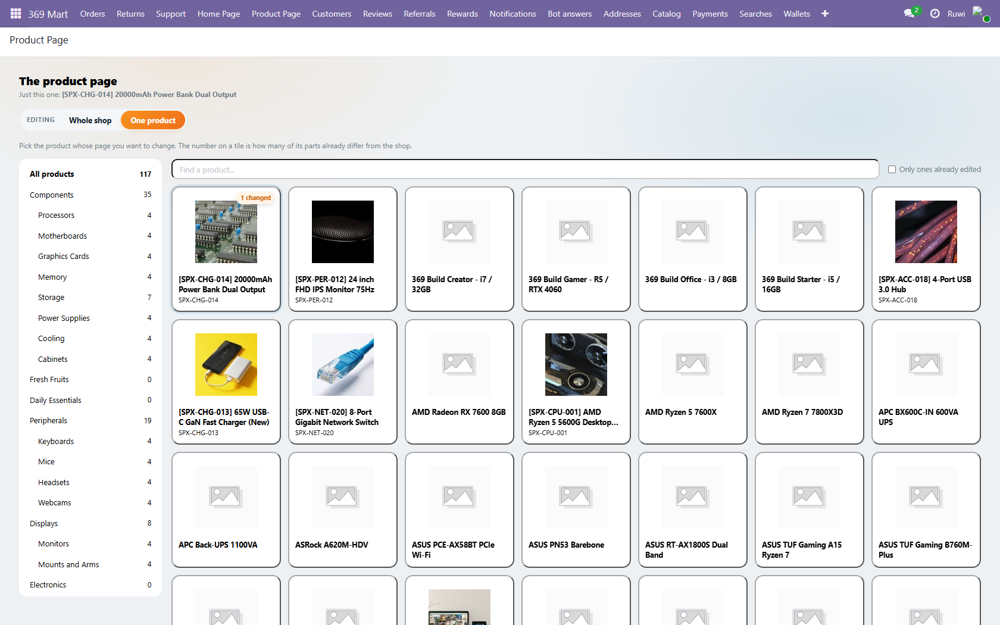
Figure 3 — One product: the category list with counts, the Find a product… box, Only ones already edited, and product tiles. The first tile is marked 1 changed.
Click a field and choose one of three:
Follow the default — do what the whole shop does. The hint shows whether that means shown or hidden right now.
Always show — show it on this product even if the shop hides it.
Always hide — hide it on this product even if the shop shows it.
Wording just for this product gives this product its own words (empty means it uses the shop's or its category's). A changed field is marked differs; Put this one back returns it to the default and clears its own words, and Put these back to the shop default does a whole section. All products takes you back to the list.
Important: Switching from One product back to Whole shop asks Switch to the whole shop? first — from there, every switch changes all products. Moving to another product after changing one asks Move to a different product? Your changes are already saved either way.
Good to know: Typing words for a product never forces the field on. If the field is hidden shop-wide and the product follows the default, it stays hidden until you choose Always show.
2What the customer sees
Top to bottom, the page shows the photos, the name and price box with the trust badges, the chosen variant's specifications, the Sales Description, ratings and reviews, then rows of other products:
Frequently bought together — up to 2 of the product's accessory products, or picked from the same category if none are set, with a total and an Add … to cart button.
Similar products — up to 12 alternative products set on the product, or from the same category.
Others you may also like — up to 10 more from the same category.
Products picked automatically are published ones from the same category, in stock first and cheapest first. A product in no category gets no automatic picks.
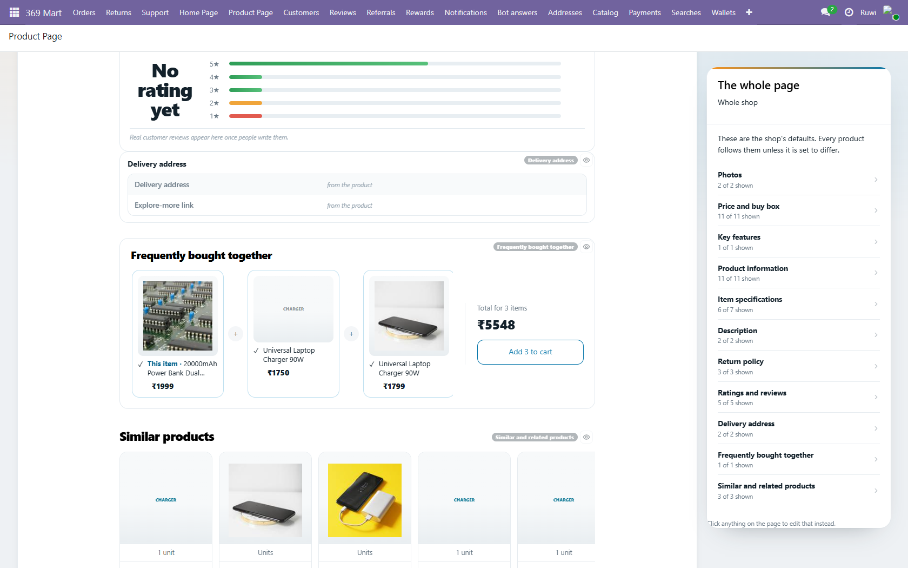
Figure 4 — Lower down the editor: the star bars of Ratings and reviews, Frequently bought together with Total for 3 items and Add 3 to cart, and the start of Similar products.
Good to know: Reviews are real. Only reviews customers actually submitted and rated, and that are published, are counted; the newest 20 are shown. A product with none shows the Be-the-first-to-review line instead of invented reviews.
3The Products desk
Open Store → Product pages. The Products desk lists every product in the shop as cards or as a list (the two buttons top right; your choice is remembered). Use:
Name or code — search by name or item code.
Category chips — All categories, each category, and Uncategorised. Tap a chip again to clear it; Clear filters clears everything.
New product — start a new product (step 5).
When the 369 Mart Catalog module is installed, the desk also shows the tiles Products, Stock value, Low stock and Out of stock (tap one to filter), the tabs All, Low, Out of stock and Hidden (products not published), and a sort: Name A-Z, Lowest stock, Best selling, Highest price. The list view has the columns Product, Category, Price, Sold / 7d, In stock and Live (Live or Hidden).
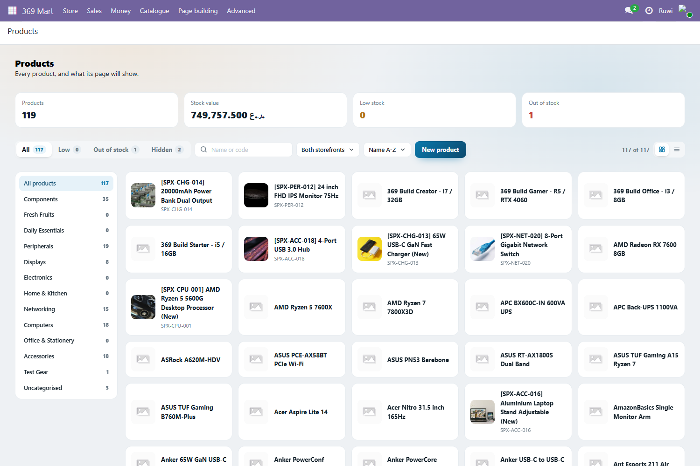
Figure 5 — The Products desk: the four tiles, the All / Low / Out of stock / Hidden tabs, search, sort, New product, a category list on the left and product cards.
4Read what one product's page shows
Tap a product. The header gives its name, N parts on its page and its categories, and three buttons: All views (the product's full form in the backend), Edit details (step 5) and Edit page (opens the editor on this product, as in step 1).
Below, the page is read out section by section: Top of the page, Choices, Item specifications, Product description, Ratings and reviews and Below the page. Each row gives the value it shows (Nothing set when empty) and where it comes from. A row the page leaves out — empty, or switched off — stays listed, greyed with a crossed-out eye, so you can tell "nothing to show" from "switched off".
With the 369 Mart Catalog module installed, the number strip appears above the sections; tapping On hand, Forecast or Sold opens the matching backend screen.
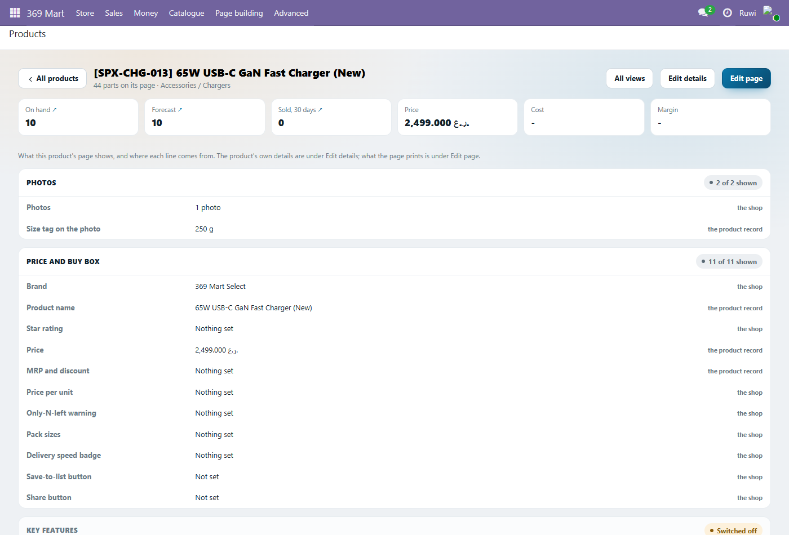
Figure 6 — One product on the desk: All products, All views, Edit details and Edit page; a strip of On hand, Forecast, Sold, 30 days, Price, Cost and Margin; then sections with N of N shown and, on the right of each row, where the value comes from.
The words on the right of each row say where the value comes from:
Where it comes from
Meaning
this product
Words typed for this product only.
its category
Words set under Wording by Category.
the product record
Taken from the product itself — its name, price, photos, specs or description.
the shop
The shop-wide default wording.
5Add or edit a product
Press New product, or Edit details on a product. A bar stays at the top with Back, the product's name (or Not saved yet), Unsaved changes when you have typed something, Cancel, and Create product or Save. Ctrl+S also saves. Cancelling with changes asks Discard your changes? — Discard or Keep editing.
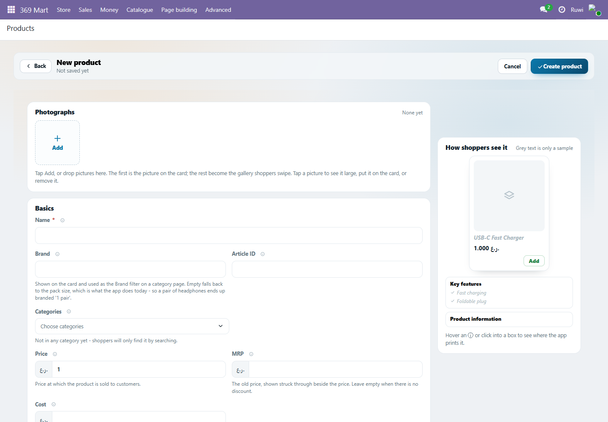
Figure 7 — New product: a photograph area with Add, the Basics boxes (Name with a red star, Brand, Article ID, Categories, Price, MRP, Cost) and, on the right, How shoppers see it with grey sample text.
Name — required. Saving without it says A product needs a name.
Category — required: the product's accounting and stock category. Saving without it says Choose a Category: every product needs one.
Categories — the aisles customers browse. Pick from Choose categories, with Find a category to search. With none, it warns Not in any category yet - shoppers will only find it by searching.
Barcode — digits only, up to 14.
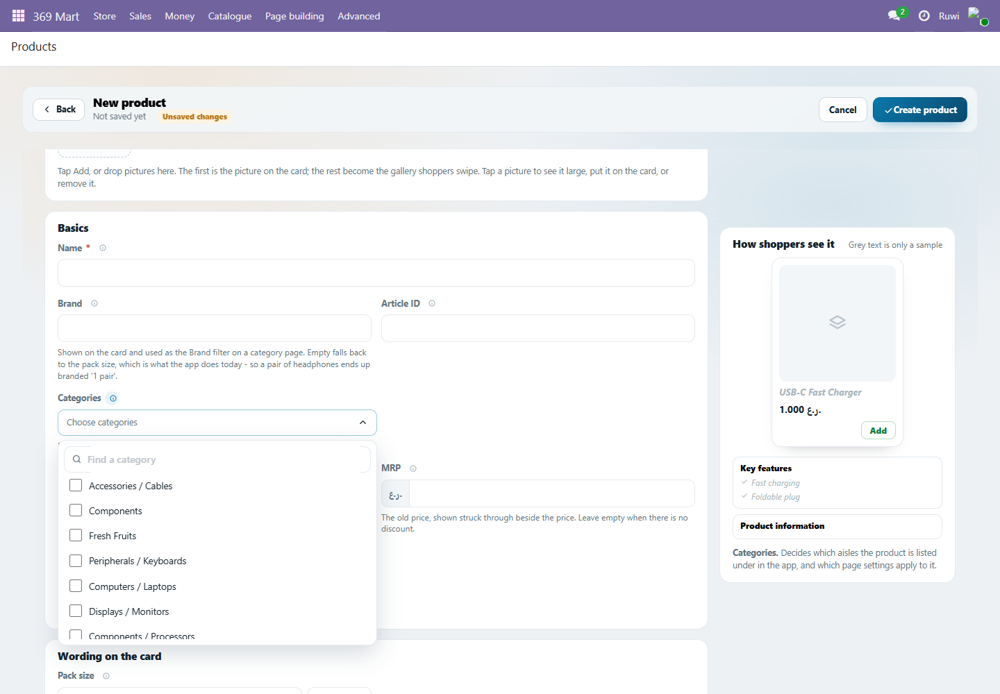
Figure 8 — Categories opened: Find a category and a tick list. The note on the right explains that categories decide the aisles a product is listed under, and which page settings apply to it.
Good to know: A product created on the desk is published straight away, so it appears in the desk's list. Once a product has a category, a box its page has been told not to print (for example MRP, when MRP and discount is hidden for it) is no longer asked for. Name, Sales Price, Category, Categories and Sales Description are always asked.
6See where a box shows
The right-hand side shows How shoppers see it. For a saved product it is the real shop page, with Desktop / Phone, Refresh and Open; tap a part of it to jump to the box that fills it. Press Save to see your changes there. A product not yet published is not on the shop. For a new product it is a drawing where grey text is only a sample. Hover the small ⓘ beside a box, or click into it, and the spot it fills is outlined.
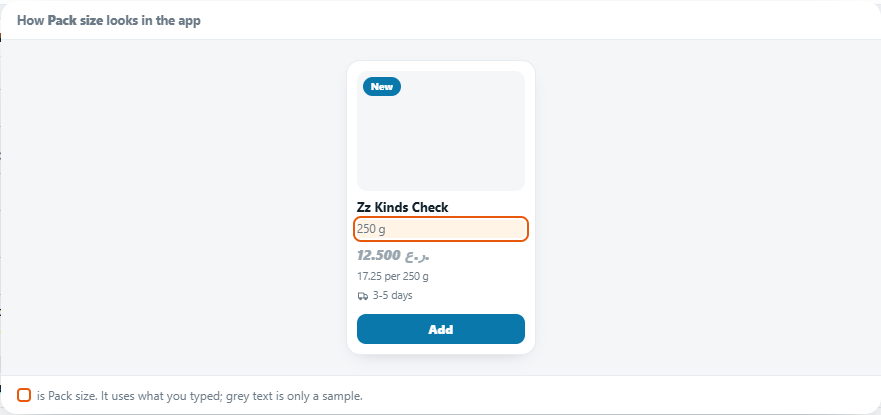
Figure 9 — How Pack size looks in the app: a product card with the pack size outlined in orange, and the note that it uses what you typed while grey text is only a sample.
7The boxes, group by group
Product — name, sold/bought ticks, product type, stock tracking, Sales Price, taxes, Cost, Category, Article ID, Barcode, Sales Description and Categories. Helpful notes say what each is for, for example that cost is never shown to customers.
About this item — typed like a Word page (bullets, bold, links); shoppers see the first 5 points, then Show more. Product details is the short table under the options: a Label and a Value per line (Add a detail). A line without a label is not shown, and the box says so.
Trust badges — Delivery time is always shown. Tick Returns, Warranty, Cash on delivery or Secure payment to show it on this product, and type its words; empty uses the shop's. Unticked reads Not shown on this product.
From the manufacturer — big pictures with an optional caption. + Add picture, then choose Full or Half width and move with the arrows. Best sizes: full width 1600 × 900 px, half width 800 × 800 px; a narrow picture gets a Small for… warning.
Website only (folded, Not used on WhatsApp) — MRP, Badge (New, Bestseller, Sale, Limited, Old stock, Organic, Imported or Other…), Express delivery time, Warn when stock reaches, Pack size, Price per unit and Small note.
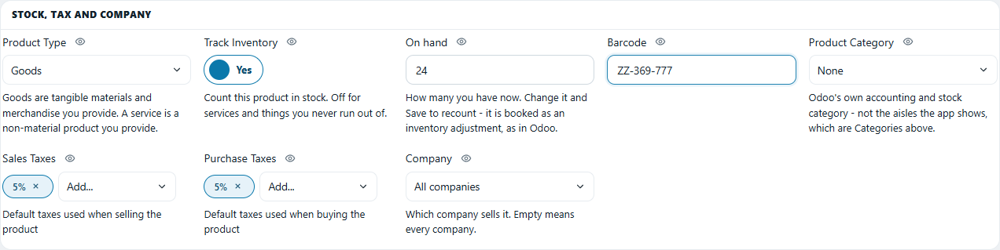
Figure 10 — Boxes for Product Type, Track Inventory, On hand, Barcode, product category, Sales Taxes, Purchase Taxes and Company, each with a short note underneath.
Tip:MRP is the old, struck-through price. If it is not above the price, the box warns MRP is not above the price, so no discount will show. Leave it empty when there is no discount.
8Photographs, choices and variants
On the desk, Picture holds the product's general photo, used when a variant has no picture of its own. Tap a picture to see it large; the viewer has Use on the card and Remove.
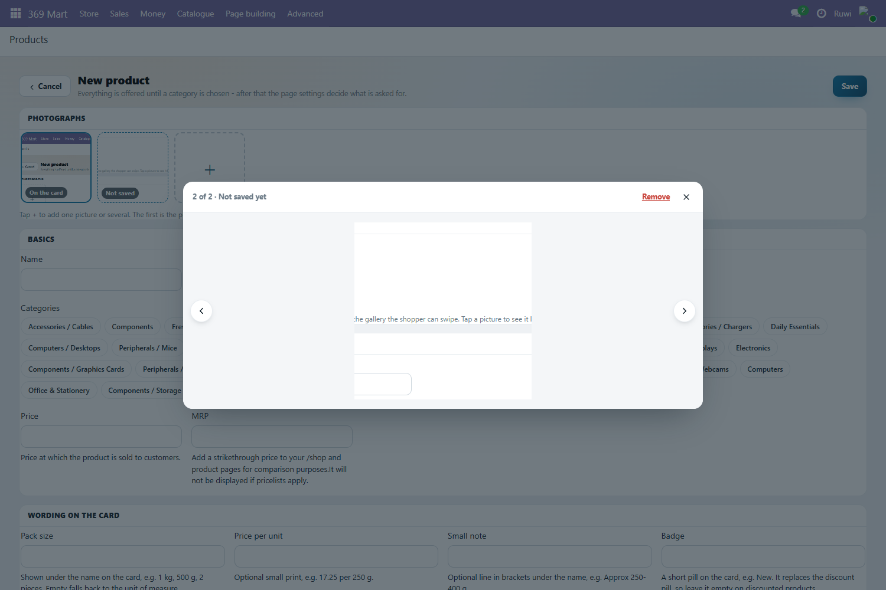
Figure 11 — A picture opened large: 2 of 2 · Not saved yet, Remove, arrows to step through, and the close button.
Attributes & Variants (What the customer chooses) sets the choices, such as Brand, RAM or Colour:
+ Add an attribute (Brand, RAM, Colour…), then tap values to pick them, or type a new one in + value. Each picked value can add to the price (+ box).
An attribute marked Information only - makes no variants is shown on the product but creates no choices.
Variants lists each resulting variant with its price. Open one for its Image and, when stock is tracked, On hand (saved as a stock adjustment). Systems with the WhatsApp product setup also show Variant images and Variant specs, with Fill from attributes.
Watch out:Adding or deleting attributes deletes and makes the variants again. Variants are made or removed when you save — finish the choices before you add per-variant pictures and stock.
9From a product's own form
The same editor appears on every product's form, on the General Information tab under a 369 Mart heading, so products edited from Inventory → Products are asked the same questions. Here it is saved with the form's own Save; Photographs takes up to 13 pictures (the first is the picture on the card, the rest the gallery, drag to reorder); and choices stay on the form's own Attributes & Variants tab.
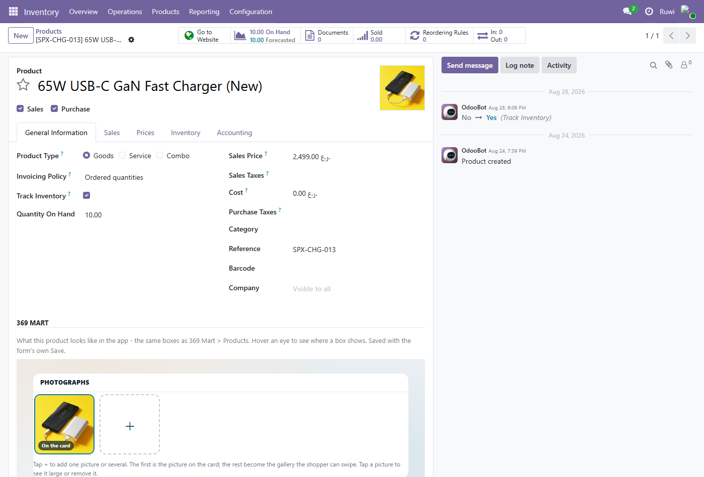
Figure 12 — A product's form on General Information: the usual product fields at the top, then the 369 MART heading with its note and the Photographs area, the first picture marked On the card.
Lower down the same tab:
Drawing (used only when the product has no photo) — Drawing, Drawing colour and Text on drawing, so a card is never blank.
Product page exceptions — the fields this product does differently, with Section, Field, Shown? and Value for this product. Open in 369 Mart > Products opens the desk straight on this product.
Good to know: A new product created here and given a shop category is switched to published, so it appears in the shop without an extra step.
Part 3 — Keeping It Secure & In Order
1Who can do what
Role
What they can do
Internal user (incl. Packer, Accountant, Rider)
Open the screens and read the settings and products. Cannot change any switch or wording. Saving on the desk says You do not have permission to change products. Ask an administrator for the website designer role.
Website designer / Manager
Everything in this manual: sections, fields, wording, category wording, per-product choices, and creating and editing products on the desk.
Owner / Administrator (Settings)
The same full rights.
A Manager has the Website designer rights automatically. The staff console's product page screens follow the same rule.
2Find and undo exceptions
Which products differ? — on One product, tick Only ones already edited; tiles show N changed.
Which fields have exceptions? — Product Page Fields with the filter Some products differ; the Products differing column counts them.
One product, everything back — on its form, Put every field back to the shop default (shown only when something differs). It asks first; any words typed only for that product are removed.
Good to know: A product that follows the default stores nothing of its own. That is why switching a field off for the whole shop later still reaches every product that follows.
3Reviews and when changes appear
Every review has a Moderation state, and only Published reviews appear on the page or count towards the rating. New reviews are published straight away; customers' reviews are answered under Reviews. The shop may reuse a fetched page for the Remember for (seconds) time in 369 Mart Settings (60 by default), so a change can take up to a minute to show.
Important: Cost is never shown to customers; the desk says so beside the box. The Hidden tab on the desk lists unpublished products — they have no page in the shop.
Sections and fields
Section
Fields
Photos
Photos (always shown).
Price and buy box
Product name and Price (always shown), MRP and discount, Only-N-left warning, Badge: returns, Badge: warranty, Badge: cash on delivery, Badge: secure payment.
Item specifications
Variant specs — the chosen variant's specs table.
Product description
Sales Description.
Ratings and reviews
Average rating, Number of ratings, Star breakdown, Customer reviews, Be-the-first-to-review line.
Frequently bought together
Frequently bought together.
Similar and related products
Similar products, Others you may also like.
Status reference — one field on one product
State
Meaning
How to change it
Follow the default
Does what the whole-shop switch says, now and later. Stores nothing.
Choose it on One product, or Put this one back.
Always show
Shown on this product whatever the shop does — unless its section is off.
Choose it on One product.
Always hide
Hidden on this product whatever the shop does.
Choose it on One product.
Is it shown?
Section switch
Product's choice
Result
Off
Anything
Hidden.
On
Always show
Shown.
On
Always hide
Hidden.
On
Follow the default
Shown if Shown on every product is on, hidden if off.
Quick tips
Set the whole shop first; make single products differ only where they truly must.
A section switch beats every field and product choice inside it.
To give a category its own words, use Wording by Category — and delete a line rather than leaving it empty.
Empty badge words hide that badge.
Only ones already edited shows every product with exceptions.
On the desk, Edit details changes the product; Edit page changes what its page shows.
Write Product details as a label and a value, such as Brand: Apple.
Set attributes before per-variant pictures and stock — changing them remakes the variants.
If something goes wrong
What you see
What to do
A field set to Always show is still missing
Its whole section is off. Open the section in Product Page and turn Shown on (or tick Show what is switched off to find it).
A badge vanished for one category
Look in Wording by Category for a line for that field with an empty value, and delete it.
The editor says there is no published product to draw
Publish at least one product, then come back.
A product isn't in the One product list
Only published products are listed. Check Uncategorised too, or search by name or code.
Saving on the desk is refused
Read the message: a missing Name or Category, a barcode with letters, or no Website designer rights (ask the Owner).
A Product details line isn't on the shop
It has no label. Write it as Label: value — the box warns which line.
No discount shows
MRP must be above the price, and MRP and discount must be shown for the product.
A change doesn't show on the shop yet
Wait for the Remember for (seconds) time (60 by default), then refresh. In the desk's preview, press Save, then Refresh.
The chip says Not saved
The last change did not reach the server. Check the connection and make the change again.